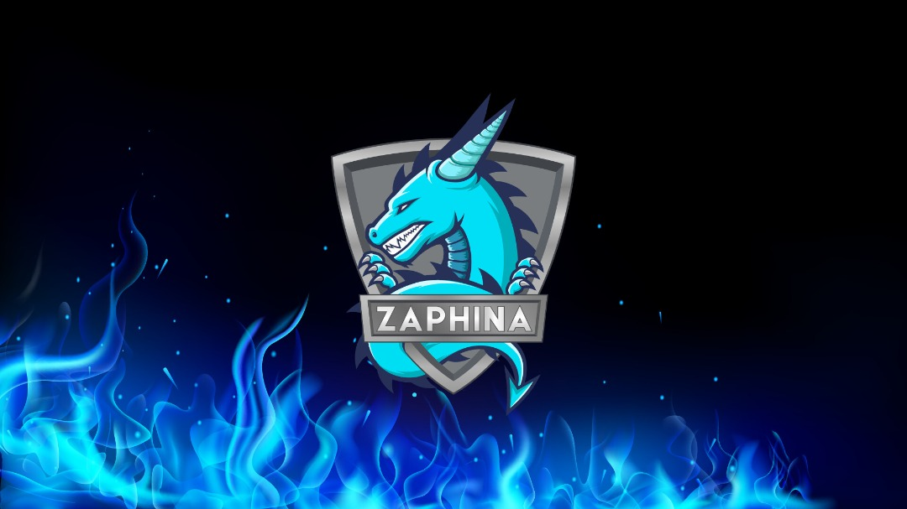

TYPE OF ART
ILLUSTRATION
Illustration design is a type of graphic design, often with a touch of humor that includes lively, unique drawings. This is in contrast to more straightforward digital design types, which tend to use instruments rather than drawing freehand to create shapes and effects. It is memorable and pleasing to look at a good illustration design. While, of course, you want a qualified artist to create your illustration, everyone will have different views on what is a "good" illustration, because it is very subjective. The most important thing is that it meets your requirements and captures the visual essence you are hoping for.

CARTOONS AND COMICS
Good design for cartoons is unforgettable, enjoyable, and simple to comprehend. Everyone will have different views on what "good" cartoon design is because it is subjective, but you will certainly want to find a cartoon designer with a high level of artistic skill. What is most critical is that the concept of the cartoon suits your desires and aligns with your brand, business or project's branding.
PROTRAITS AND CARICATURES
First, portraits are defined as relating to, or being a rectangular document having the vertical dimension longer than the horizontal dimension. Also, it can be known as a painting, photograph, and drawing of a person or, less commonly, of a group of people. Next, the word caricature can be used as a noun or verb. As a noun, it is defined as a picture, description, or imitation of a person in which certain striking characteristics are exaggerated to create a comic effect. As a verb, to caricature is to make or give a comically or exaggerated representation of someone or something. To enhance the basic essence of a person creating an interesting version of them with a touch of humour.
ARTS AND CRAFTS
A movement in European and American design during the late 19th and early 20th centuries promoting handcraftsmanship over industrial mass production. The skills of making objects for decoration and practical uses by hand, such as decorations, furniture, and pottery by hand. Some crafts have been practised for centuries. William Morris, John Ruskin, and others promoted an "arts and crafts" movement in the late 19th century, which popularized the phrase. Both children and adults enjoy arts and crafts. Children in schools may learn skills such as woodworking, wood carving, sewing, or making things with all sorts of material. Many community centres and schools have evening or day classes and workshops where one can learn arts and craft skills. For example, a shop that sells local arts and crafts, such as pottery and baskets.
GAME ART
An art game is a work of interactive new media digital software art as well as a member of the "art game" subgenre of the serious video game. The term "art game" was first used academically in 2002 and it has come to be understood as describing a video game designed to emphasize art or whose structure is intended to produce reaction in its audience. Art games are interactive and the result of artistic intent by the party offering the piece for consideration. They also typically go out of their way to have a unique, unconventional look, often standing out for aesthetic beauty or complexity in design. Modified games created for artistic purposes are sometimes referred to as "video game art". Art games are often considered a means of demonstrating video games as works of art.
CREATIVE WRITING
Creative writing, a form of artistic expression, draws on the imagination to convey meaning using imagery, narrative, and drama. This contrasts with analytic or pragmatic forms of writing. This genre includes poetry, fiction, scripts, screenplays, and creative non-fiction. Creative writing also develops creative thoughts, using their imaginations, suggest alternatives, broaden their though process and problem-solving abilities. It also allows the child to show their opinions and develop their voice. It also improves their logical skills. For example, poetry, plays, movie, fiction, and television scripts.

GRAPHICS FOR STREAMERS
Graphics, especially overlays, improve your stream presentation and make your channel unique. Great graphics boost viewer engagement, provide real-time information about your current gameplay and your brand, and sets you apart from other streamers. They also indicate that a streamer is professional and committed to their channel and community, making the viewing experience more memorable.Streamer also use emotes to talk with their viewer. Emotes are entries in text-based chat that indicate an emotion or action. They are essentially special emojis used to convey a message or emotion in the form of text or an image.
AFFILIATE MARKETING
Affiliate marketing is the process by which an affiliate earns a commission for marketing another person's or company's products. The affiliate simply searches for a product they enjoy, then promotes that product and earns a piece of the profit from each sale they make. Affiliate marketing is a popular tactic to drive sales and generate significant online revenue. Extremely beneficial to both brands and affiliate marketers, the new push towards less traditional marketing tactics has paid off
VECTOR TRACING
In computer graphics, vector tracing is the conversion of raster graphics into vector graphics. Raster graphics are represented by a dot matrix and often appear pixelated. Vector graphics retain all the colors and contours of shapes and lines, and so are more desirable for graphic design. While a raster image may look good on the screen, it does not scale well and will look distorted if printed. On the other hand, vector images scale easily without any reduced resolution, which is why they are the preferred file format for printing, both on paper and clothes. Vector images are also preferred for flash animations.
CHARACTER MODELING
Character modeling is the process of transforming a concept, essentially an idea, into a three-dimensional model. The character artist builds the model from the ground up using tools such as polygon box modeling, hard surface modeling, and digital sculpting techniques. Think of it like the traditional art of sculpting a statue. In classical art this was done with clay, marble, and other materials. The artist would start with a large block of material and use additive or subtractive techniques to create their vision.